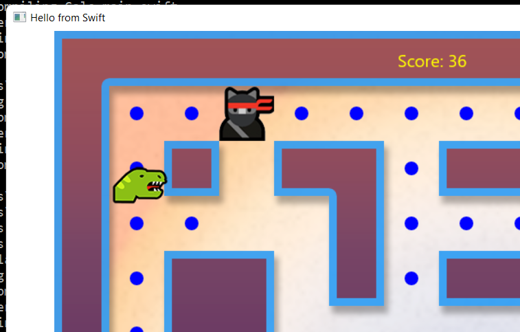
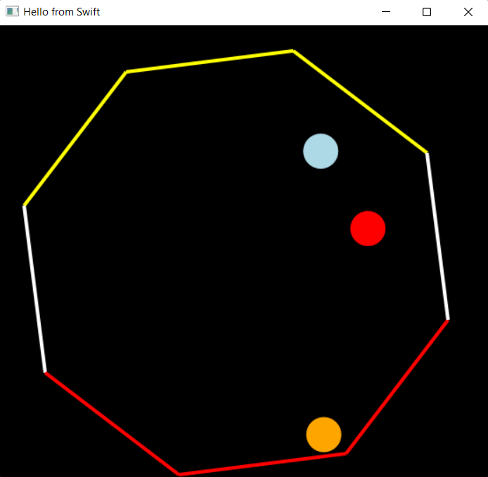
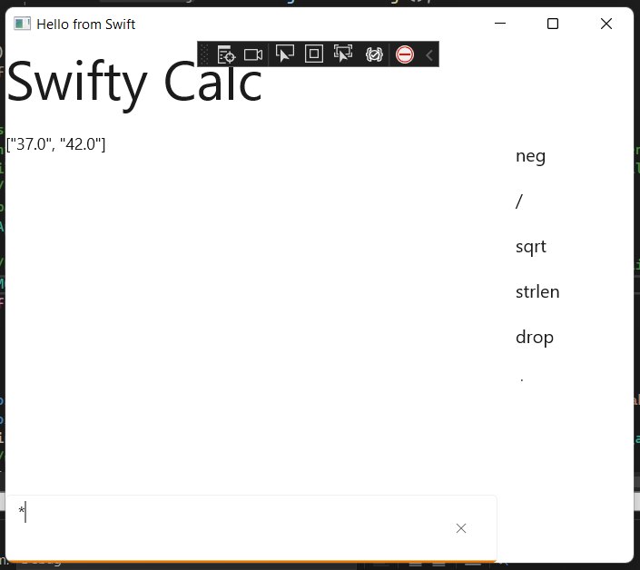

My exploration of interop between Microsoft Things and Other Things has brought me to work on creating a Swift projection for WinRT.
This effort is currently taking place in the following repo:
https://github.com/ericsink/SwiftWinRT
The code for the generated bindings, support libraries, and samples is all available there.
Modern Windows APIs are based on WinRT, which is based on COM, which has a long history at Microsoft. The nice thing about WinRT is that it is designed to be used from a variety of programming languages. A few years ago, Microsoft created the "xlang" project as "the hub for the constellation of tools that enable development of Windows applications across a variety of programming languages":
https://github.com/microsoft/xlang
Nowadays, the broader aspects of xlang don't seem to have a lot of momentum. The languages getting the most traction are C++, C#, and Rust, while some others appear to have run out of steam. But the underpinnings remain solid, and it is quite feasible to develop a WinRT projection for other languages.
Swift is a language mostly associated with Apple platforms, but its cross-platform presence is growing, and its use of Automatic Reference Counting (ARC) makes it a natural fit for WinRT, which also uses reference counting for memory management. Like C++ and Rust, Swift compiles to native code. Swift is also considered very pleasant to use, comparable to C# in terms of overall developer experience.
No discussion of Swift on Windows would be complete without mention of Saleem Abdulrasool (GitHub: @compnerd), member of the Swift Core Team. Basically everything about Swift on Windows is built on his efforts. In fact, my working repo linked above is a fork of his repo where he did some experimental work in this area.
I am accumulating a collection of samples in the repo. Here in this blog post, I want to highlight four of them:
HttpClient is a console app, demonstrating the use of Windows.Web.Http, and showing how async WinRT calls are projected using Swift's async/await features.
MazeGame is a port of https://github.com/microsoft/Win2DMazeGame, demonstrating the use of Win2D from Swift.
Physics is a little app that simply brings up a window with 3 balls bouncing around, further demonstrating the use of Win2D, and also showing C interop with the Chipmunk2D physics engine.
Calc is a WinUI 3 app, demonstrating the use of controls such as TextBox and ListView with Windows App SDK 1.1.1.
This sample is short enough to just include all the code right here:
import WinRT
import WindowsSdk
@main
class HttpClientDemo {
public static func main() async throws {
try RoInitialize()
let httpClient = try Windows.Web.Http.HttpClient();
let requestUri = try Windows.Foundation.Uri(uri: "https://ericsink.com");
let httpResponse = try await httpClient.Get(uri: requestUri)!;
let _ = try httpResponse.EnsureSuccessStatusCode();
let httpResponseBody = try await httpResponse.Content!.ReadAsString();
print(httpResponseBody);
}
}
The projection for asynchronous WinRT methods uses Swift await,
resulting in a code that is rather similar to C#,
which I consider to be a pleasant outcome.
As mentioned above, this one is just a straight port of a Microsoft sample from C# to Swift.

One thing that turns out very nice in Swift is projecting WinRT delegates as closures, and then using Swift's idiomatic "trailing closure" syntax:
_ = try self.Timer.add_Tick
{
(_, _) in
try canvas.Invalidate();
}
This sample was me experimenting with Swift's C interop (which is lovely) while learning how to use a 2D physics engine (Chipmunk2D).

The typical way to use a C library with Swift is to allow Swift to "import" it, and then write a Swift wrapper which presents things in more idiomatic ways. But that wrapper isn't required, and I didn't write one here. I'm just using the Chipmunk2D API in its Swift form, pointers and all.
func canvasControl_Draw(sender : CanvasControl?, args: CanvasDrawEventArgs?) throws
{
// The screen is cleared, so we need to redraw everything
// call chipmunk to update
// doing multiple Step calls here prevents things going too fast
// and passing through the static body barrier lines.
for _ in 0..<10 {
cpSpaceStep(space, ms_to_s(ms: 3))
}
// then draw the bouncing ball at its current position
let pos1 = cpBodyGetPosition(body1)
try args!.DrawingSession!.FillCircle(
x: Float(pos1.x),
y: Float(pos1.y),
radius: Float(ballRadius),
color: Microsoft.UI.Colors.Orange
);
Looking at the call to
Win2D's FillCircle method, note that the generated
projections use Swift parameter labels. Most of the time,
in the Swift world, This is the Way.
This sample is an RPN-style calculator, with delusions of grandeur. It is my attempt to write a sample that (1) uses WinUI controls, and (2) is a bit more than just a demo, perhaps even useful.

Note that this sample uses controls from the Microsoft.UI.Xaml namespace,
but it does not use XAML syntax. For example, here is part of the code
to setup the Grid layout for the window:
let grid = try Microsoft.UI.Xaml.Controls.Grid(); let c0 = try Microsoft.UI.Xaml.Controls.ColumnDefinition() try c0.put_Width(value: GridLength(Value: 1, GridUnitType: GridUnitType.Star)) let c1 = try Microsoft.UI.Xaml.Controls.ColumnDefinition() try c1.put_Width(value: GridLength(Value: 120, GridUnitType: GridUnitType.Pixel)) try grid.ColumnDefinitions!.Append(value: c0) try grid.ColumnDefinitions!.Append(value: c1)
One complication here is that using WinUI controls from the Windows App SDK is not quite as simple as I expected it to be. Instead of sidetracking this blog entry with a long discussion of the details, let me summarize with the bottom line: Currently, using WinUI controls from Swift requires building as a DLL which then gets hosted in a small bootstrap program written in C++.
Full API coverage. Currently, I only generate Swift bindings for certain things, because if I generate them all, the resulting DLL fails to link because it has too many symbols. I need to break things into pieces.
Integrate the C++/Swift build. For the WinUI sample, I manually copy the Swift build outputs into the output directory of the boostrap program. That is Not Very Friendly.
Generalize the reg-free activation stuff. The support for Win2D should be made general-purpose, so it can support wrapping other third party WinUI controls.
And plenty more...
If you have questions or feedback on any of this, or are simply interested in cross-platform Swift, feel free to contact me using GitHub discussions in the repo at the top of this post, or on the Swift Forums:
https://forums.swift.org/c/development/windows/67
Cheers!